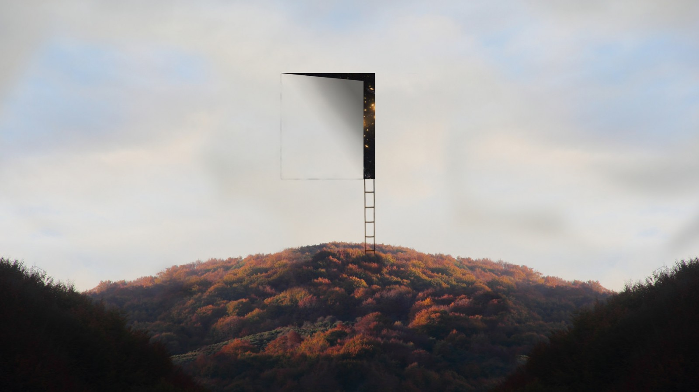

<!--
  Generated template for the MorePage page.

  See http://ionicframework.com/docs/components/#navigation for more info on
  Ionic pages and navigation.
-->
<ion-header>

  <ion-navbar>
    <ion-title>更多</ion-title>
  </ion-navbar>

</ion-header>


<ion-content>
  <div *ngIf="notLogin" >
      <ion-card>
        <ion-card-header text-center>
          登陆知乎，体验更多功能
        </ion-card-header>
        <ion-card-content text-center>
          <button ion-button outline small (click)="showModal()" >登陆/注册</button>
        </ion-card-content>
      </ion-card>
  </div>

  <div *ngIf="logined" >
    <ion-list class="marginTop" [navPush]="UserPage">
      <button ion-item >
        <ion-avatar item-left>
          <!--  -->
          
        </ion-avatar>
        <!-- <h2>徐凤年</h2> -->
        <h2>{{UserNickName}}</h2>
        <p>查看个人主页或编辑简介 </p>
      </button>
    </ion-list>
      
    <ion-list class="marginTop" >
          <ion-list-header>
            我的慕课
          </ion-list-header>
          <button ion-item>
              <ion-icon name="paper" item-start color="primary"></ion-icon>
              <ion-label>我的提问</ion-label>
          </button>
          <button ion-item>
              <ion-icon name="star" item-start color="orange"></ion-icon>
              <ion-label>我的关注</ion-label>
          </button>
          <button ion-item>
              <ion-icon name="disc" item-start color="blue"></ion-icon>
              <ion-label>我的回答</ion-label>
          </button>
      </ion-list>


  </div>
</ion-content>
